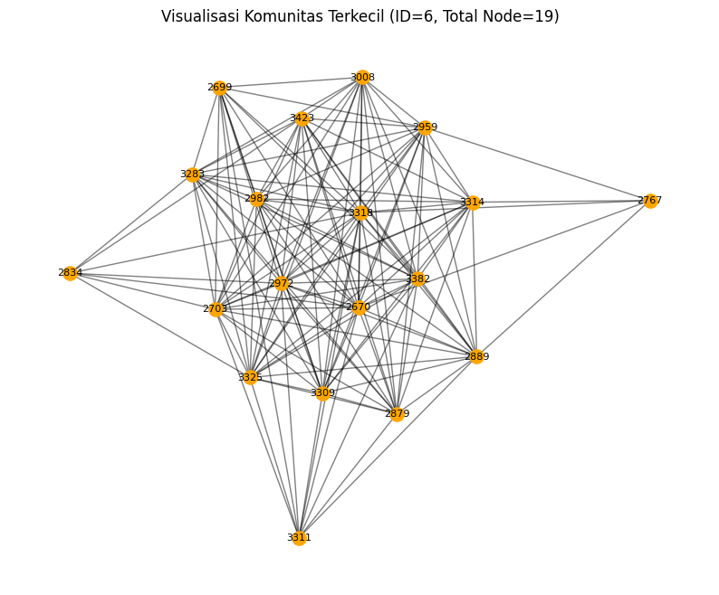

Graph Facebook Community#
import pandas as pd
df = pd.read_csv(
"facebook_combined.txt", # nama file input
sep=" ", # pemisah spasi
header=None, # tidak ada header
names=["user_id", "friend_id"] # nama kolom yang diinginkan
)
output_file = "facebook_friendship.csv"
df.to_csv(output_file, index=False)
print(f"Konversi selesai! File CSV disimpan sebagai: {output_file}")
Konversi selesai! File CSV disimpan sebagai: facebook_friendship.csv
total_users = len(pd.unique(df[['user_id','friend_id']].values.ravel()))
print(f"Total jumlah user (nodes): {total_users}")
Total jumlah user (nodes): 4039
df.head()
| user_id | friend_id | |
|---|---|---|
| 0 | 0 | 1 |
| 1 | 0 | 2 |
| 2 | 0 | 3 |
| 3 | 0 | 4 |
| 4 | 0 | 5 |
pip install python-louvain
Requirement already satisfied: python-louvain in /usr/local/lib/python3.12/dist-packages (0.16)
Requirement already satisfied: networkx in /usr/local/lib/python3.12/dist-packages (from python-louvain) (3.6)
Requirement already satisfied: numpy in /usr/local/lib/python3.12/dist-packages (from python-louvain) (2.0.2)
import community as community_louvain
import community.community_louvain as community_louvain
import networkx as nx
import community.community_louvain as community_louvain
G = nx.read_edgelist("facebook_combined.txt", nodetype=int)
partition = community_louvain.best_partition(G)
partition
{0: 0,
1: 0,
2: 0,
3: 0,
4: 0,
5: 0,
6: 0,
7: 0,
8: 0,
9: 0,
10: 0,
11: 0,
12: 0,
13: 0,
14: 0,
15: 0,
16: 0,
17: 0,
18: 0,
19: 0,
20: 0,
21: 0,
22: 0,
23: 0,
24: 0,
25: 0,
26: 0,
27: 0,
28: 0,
29: 0,
30: 0,
31: 0,
32: 0,
33: 0,
34: 1,
35: 0,
36: 0,
37: 0,
38: 0,
39: 0,
40: 0,
41: 0,
42: 0,
43: 0,
44: 0,
45: 0,
46: 0,
47: 0,
48: 0,
49: 0,
50: 0,
51: 0,
52: 0,
53: 0,
54: 0,
55: 0,
56: 0,
57: 0,
58: 0,
59: 0,
60: 0,
61: 0,
62: 0,
63: 0,
64: 0,
65: 0,
66: 0,
67: 0,
68: 0,
69: 0,
70: 0,
71: 0,
72: 0,
73: 0,
74: 0,
75: 0,
76: 0,
77: 0,
78: 0,
79: 0,
80: 0,
81: 0,
82: 0,
83: 0,
84: 0,
85: 0,
86: 0,
87: 0,
88: 0,
89: 0,
90: 0,
91: 0,
92: 0,
93: 0,
94: 0,
95: 0,
96: 0,
97: 0,
98: 0,
99: 0,
100: 0,
101: 0,
102: 0,
103: 0,
104: 0,
105: 0,
106: 0,
107: 3,
108: 0,
109: 0,
110: 0,
111: 0,
112: 0,
113: 0,
114: 0,
115: 0,
116: 0,
117: 0,
118: 0,
119: 0,
120: 0,
121: 0,
122: 0,
123: 0,
124: 0,
125: 0,
126: 0,
127: 0,
128: 0,
129: 0,
130: 0,
131: 0,
132: 0,
133: 0,
134: 0,
135: 0,
136: 4,
137: 0,
138: 0,
139: 0,
140: 0,
141: 0,
142: 0,
143: 0,
144: 0,
145: 0,
146: 0,
147: 0,
148: 0,
149: 0,
150: 0,
151: 0,
152: 0,
153: 0,
154: 0,
155: 0,
156: 0,
157: 0,
158: 0,
159: 0,
160: 0,
161: 0,
162: 0,
163: 0,
164: 0,
165: 0,
166: 0,
167: 0,
168: 0,
169: 0,
170: 0,
171: 0,
172: 0,
173: 1,
174: 0,
175: 0,
176: 0,
177: 0,
178: 0,
179: 0,
180: 0,
181: 0,
182: 0,
183: 0,
184: 0,
185: 0,
186: 0,
187: 0,
188: 0,
189: 0,
190: 0,
191: 0,
192: 0,
193: 0,
194: 0,
195: 0,
196: 0,
197: 0,
198: 1,
199: 0,
200: 0,
201: 0,
202: 0,
203: 0,
204: 0,
205: 0,
206: 0,
207: 0,
208: 0,
209: 0,
210: 0,
211: 0,
212: 0,
213: 0,
214: 0,
215: 0,
216: 0,
217: 0,
218: 0,
219: 0,
220: 0,
221: 0,
222: 0,
223: 0,
224: 0,
225: 0,
226: 0,
227: 0,
228: 0,
229: 0,
230: 0,
231: 0,
232: 0,
233: 0,
234: 0,
235: 0,
236: 0,
237: 0,
238: 0,
239: 0,
240: 0,
241: 0,
242: 0,
243: 0,
244: 0,
245: 0,
246: 0,
247: 0,
248: 0,
249: 0,
250: 0,
251: 0,
252: 0,
253: 0,
254: 0,
255: 0,
256: 0,
257: 0,
258: 0,
259: 0,
260: 0,
261: 0,
262: 0,
263: 0,
264: 0,
265: 0,
266: 0,
267: 0,
268: 0,
269: 0,
270: 0,
271: 0,
272: 0,
273: 0,
274: 0,
275: 0,
276: 0,
277: 0,
278: 0,
279: 0,
280: 0,
281: 0,
282: 0,
283: 0,
284: 0,
285: 0,
286: 0,
287: 0,
288: 0,
289: 0,
290: 0,
291: 0,
292: 0,
293: 0,
294: 0,
295: 0,
296: 0,
297: 0,
298: 0,
299: 0,
300: 0,
301: 0,
302: 0,
303: 0,
304: 0,
305: 0,
306: 0,
307: 0,
308: 0,
309: 0,
310: 0,
311: 0,
312: 0,
313: 0,
314: 0,
315: 0,
316: 0,
317: 0,
318: 0,
319: 0,
320: 0,
321: 0,
322: 0,
323: 0,
324: 0,
325: 0,
326: 0,
327: 0,
328: 0,
329: 0,
330: 0,
331: 0,
332: 0,
333: 0,
334: 0,
335: 0,
336: 0,
337: 0,
338: 0,
339: 0,
340: 0,
341: 0,
342: 0,
343: 0,
344: 0,
345: 0,
346: 0,
347: 0,
348: 1,
414: 1,
428: 1,
1684: 5,
1912: 4,
2814: 0,
2838: 0,
2885: 0,
3003: 0,
3173: 5,
3290: 0,
353: 1,
363: 1,
366: 1,
376: 1,
389: 6,
420: 1,
475: 1,
483: 1,
484: 1,
517: 1,
526: 1,
538: 1,
563: 1,
566: 1,
580: 1,
596: 1,
601: 1,
606: 1,
629: 1,
637: 1,
641: 1,
649: 2,
651: 1,
896: 6,
897: 3,
898: 6,
899: 3,
900: 2,
901: 2,
902: 6,
903: 2,
904: 3,
905: 1,
906: 3,
907: 3,
908: 2,
909: 2,
910: 1,
911: 3,
912: 1,
913: 6,
914: 6,
915: 1,
916: 3,
917: 6,
918: 3,
919: 6,
920: 3,
921: 3,
922: 3,
923: 2,
924: 6,
925: 3,
926: 3,
927: 3,
928: 2,
929: 2,
930: 1,
931: 1,
932: 3,
933: 6,
934: 3,
935: 6,
936: 1,
937: 6,
938: 2,
939: 1,
940: 6,
941: 6,
942: 6,
943: 6,
944: 6,
945: 6,
946: 3,
947: 3,
948: 1,
949: 6,
950: 2,
951: 2,
952: 3,
953: 3,
954: 6,
955: 2,
956: 2,
957: 6,
958: 2,
959: 3,
960: 3,
961: 3,
962: 1,
963: 2,
964: 6,
965: 6,
966: 3,
967: 3,
968: 6,
969: 6,
970: 2,
971: 6,
972: 3,
973: 3,
974: 6,
975: 6,
976: 1,
977: 6,
978: 3,
979: 2,
980: 3,
981: 6,
982: 3,
983: 3,
984: 6,
985: 6,
986: 6,
987: 2,
988: 6,
989: 6,
990: 5,
991: 3,
992: 2,
993: 3,
994: 6,
995: 3,
996: 3,
997: 3,
998: 3,
999: 3,
1000: 6,
1001: 1,
1002: 3,
1003: 3,
1004: 3,
1005: 6,
1006: 3,
1007: 6,
1008: 3,
1009: 6,
1010: 6,
1011: 6,
1012: 1,
1013: 6,
1014: 6,
1015: 6,
1016: 2,
1017: 3,
1018: 6,
1019: 6,
1020: 6,
1021: 6,
1022: 3,
1023: 2,
1024: 3,
1025: 1,
1026: 3,
1027: 3,
1028: 3,
1029: 3,
1030: 2,
1031: 2,
1032: 6,
1033: 2,
1034: 3,
1035: 6,
1036: 6,
1037: 6,
1038: 3,
1039: 3,
1040: 3,
1041: 6,
1042: 6,
1043: 2,
1044: 6,
1045: 2,
1046: 3,
1047: 3,
1048: 3,
1049: 3,
1050: 3,
1051: 6,
1052: 6,
1053: 2,
1054: 3,
1055: 3,
1056: 3,
1057: 2,
1058: 3,
1059: 3,
1060: 6,
1061: 2,
1062: 6,
1063: 3,
1064: 1,
1065: 6,
1066: 6,
1067: 6,
1068: 3,
1069: 3,
1070: 6,
1071: 3,
1072: 6,
1073: 2,
1074: 3,
1075: 3,
1076: 3,
1077: 3,
1078: 3,
1079: 3,
1080: 1,
1081: 6,
1082: 6,
1083: 3,
1084: 3,
1085: 9,
1086: 3,
1087: 3,
1088: 2,
1089: 6,
1090: 6,
1091: 3,
1092: 3,
1093: 6,
1094: 1,
1095: 1,
1096: 3,
1097: 2,
1098: 2,
1099: 6,
1100: 6,
1101: 3,
1102: 6,
1103: 6,
1104: 6,
1105: 3,
1106: 6,
1107: 3,
1108: 6,
1109: 6,
1110: 3,
1111: 2,
1112: 3,
1113: 1,
1114: 1,
1115: 6,
1116: 3,
1117: 3,
1118: 2,
1119: 3,
1120: 6,
1121: 6,
1122: 1,
1123: 3,
1124: 3,
1125: 3,
1126: 3,
1127: 6,
1128: 3,
1129: 6,
1130: 3,
1131: 6,
1132: 3,
1133: 3,
1134: 6,
1135: 3,
1136: 2,
1137: 2,
1138: 2,
1139: 6,
1140: 5,
1141: 6,
1142: 1,
1143: 6,
1144: 2,
1145: 3,
1146: 3,
1147: 6,
1148: 6,
1149: 3,
1150: 3,
1151: 3,
1152: 6,
1153: 3,
1154: 1,
1155: 1,
1156: 3,
1157: 3,
1158: 6,
1159: 6,
1160: 3,
1161: 3,
1162: 1,
1163: 3,
1164: 3,
1165: 2,
1166: 6,
1167: 6,
1168: 6,
1169: 6,
1170: 6,
1171: 3,
1172: 3,
1173: 3,
1174: 2,
1175: 3,
1176: 6,
1177: 2,
1178: 2,
1179: 1,
1180: 3,
1181: 3,
1182: 3,
1183: 6,
1184: 3,
1185: 3,
1186: 2,
1187: 2,
1188: 6,
1189: 6,
1190: 6,
1191: 3,
1192: 6,
1193: 0,
1194: 3,
1195: 3,
1196: 3,
1197: 2,
1198: 3,
1199: 3,
1200: 3,
1201: 3,
1202: 3,
1203: 2,
1204: 6,
1205: 3,
1206: 3,
1207: 3,
1208: 3,
1209: 3,
1210: 1,
1211: 3,
1212: 1,
1213: 6,
1214: 3,
1215: 6,
1216: 2,
1217: 6,
1218: 2,
1219: 3,
1220: 3,
1221: 6,
1222: 3,
1223: 1,
1224: 3,
1225: 6,
1226: 6,
1227: 6,
1228: 6,
1229: 6,
1230: 3,
1231: 6,
1232: 2,
1233: 1,
1234: 1,
1235: 6,
1236: 6,
1237: 1,
1238: 3,
1239: 3,
1240: 2,
1241: 6,
1242: 3,
1243: 3,
1244: 6,
1245: 6,
1246: 6,
1247: 6,
1248: 6,
1249: 6,
1250: 3,
1251: 2,
1252: 2,
1253: 3,
1254: 2,
1255: 3,
1256: 3,
1257: 6,
1258: 6,
1259: 6,
1260: 6,
1261: 6,
1262: 3,
1263: 1,
1264: 6,
1265: 3,
1266: 3,
1267: 3,
1268: 6,
1269: 3,
1270: 3,
1271: 3,
1272: 3,
1273: 6,
1274: 2,
1275: 6,
1276: 3,
1277: 6,
1278: 3,
1279: 6,
1280: 3,
1281: 6,
1282: 6,
1283: 3,
1284: 6,
1285: 3,
1286: 6,
1287: 3,
1288: 3,
1289: 3,
1290: 3,
1291: 3,
1292: 6,
1293: 3,
1294: 1,
1295: 1,
1296: 6,
1297: 0,
1298: 6,
1299: 6,
1300: 1,
1301: 3,
1302: 3,
1303: 6,
1304: 6,
1305: 3,
1306: 6,
1307: 2,
1308: 6,
1309: 6,
1310: 6,
1311: 6,
1312: 3,
1313: 1,
1314: 2,
1315: 6,
1316: 6,
1317: 2,
1318: 1,
1319: 2,
1320: 1,
1321: 3,
1322: 6,
1323: 3,
1324: 6,
1325: 2,
1326: 3,
1327: 3,
1328: 2,
1329: 3,
1330: 3,
1331: 3,
1332: 1,
1333: 2,
1334: 3,
1335: 3,
1336: 3,
1337: 3,
1338: 6,
1339: 3,
1340: 3,
1341: 3,
1342: 1,
1343: 6,
1344: 3,
1345: 6,
1346: 3,
1347: 6,
1348: 6,
1349: 1,
1350: 6,
1351: 3,
1352: 3,
1353: 2,
1354: 6,
1355: 6,
1356: 1,
1357: 1,
1358: 1,
1359: 3,
1360: 2,
1361: 3,
1362: 6,
1363: 2,
1364: 6,
1365: 3,
1366: 6,
1367: 3,
1368: 2,
1369: 3,
1370: 3,
1371: 2,
1372: 1,
1373: 6,
1374: 1,
1375: 3,
1376: 3,
1377: 3,
1378: 2,
1379: 6,
1380: 3,
1381: 6,
1382: 6,
1383: 3,
1384: 2,
1385: 6,
1386: 3,
1387: 0,
1388: 3,
1389: 3,
1390: 3,
1391: 3,
1392: 6,
1393: 3,
1394: 2,
1395: 3,
1396: 6,
1397: 1,
1398: 3,
1399: 3,
1400: 1,
1401: 3,
1402: 3,
1403: 2,
1404: 6,
1405: 3,
1406: 6,
1407: 3,
1408: 1,
1409: 3,
1410: 2,
1411: 3,
1412: 6,
1413: 6,
1414: 6,
1415: 6,
1416: 3,
1417: 6,
1418: 6,
1419: 3,
1420: 3,
1421: 2,
1422: 1,
1423: 6,
1424: 2,
1425: 1,
1426: 6,
1427: 1,
1428: 6,
1429: 6,
1430: 1,
1431: 3,
1432: 6,
1433: 2,
1434: 3,
1435: 6,
1436: 6,
1437: 3,
1438: 6,
1439: 3,
1440: 3,
1441: 3,
1442: 3,
1443: 1,
1444: 6,
1445: 2,
1446: 1,
1447: 3,
1448: 6,
1449: 3,
1450: 5,
1451: 6,
1452: 2,
1453: 1,
1454: 6,
1455: 1,
1456: 3,
1457: 3,
1458: 3,
1459: 6,
1460: 3,
1461: 3,
1462: 6,
1463: 3,
1464: 1,
1465: 4,
1466: 3,
1467: 3,
1468: 2,
1469: 6,
1470: 3,
1471: 3,
1472: 6,
1473: 6,
1474: 6,
1475: 6,
1476: 3,
1477: 3,
1478: 1,
1479: 6,
1480: 3,
1481: 6,
1482: 6,
1483: 3,
1484: 3,
1485: 3,
1486: 0,
1487: 1,
1488: 3,
1489: 6,
1490: 1,
1491: 3,
1492: 6,
1493: 2,
1494: 2,
1495: 6,
1496: 6,
1497: 1,
1498: 3,
1499: 2,
1500: 6,
1501: 3,
1502: 6,
1503: 6,
1504: 6,
1505: 5,
1506: 1,
1507: 6,
1508: 6,
1509: 3,
1510: 6,
1511: 2,
1512: 1,
1513: 3,
...}
import networkx as nx
import community.community_louvain as community_louvain
import matplotlib.pyplot as plt
# Load edge list
G = nx.read_edgelist("facebook_combined.txt", nodetype=int)
# Hitung komunitas
partition = community_louvain.best_partition(G)
# Buat warna node
colors = [partition[node] for node in G.nodes()]
# Layout
pos = nx.spring_layout(G, seed=42)
plt.figure(figsize=(12, 10))
nx.draw_networkx_nodes(G, pos, node_size=40, node_color=colors, cmap=plt.cm.tab20)
nx.draw_networkx_edges(G, pos, alpha=0.2)
plt.title("Louvain Community Detection on Facebook Friendship Graph")
plt.axis("off")
plt.show()

# Hitung jumlah komunitas
num_communities = len(set(partition.values()))
print(f"Total jumlah komunitas yang terdeteksi = {num_communities}")
Total jumlah komunitas yang terdeteksi = 16
Menghitung jumlah komunitas terkecil dan siapa saja yang ada di dalamnya
from collections import defaultdict
# Kelompokkan node berdasarkan community ID
communities = defaultdict(list)
for node, comm in partition.items():
communities[comm].append(node)
# Hitung jumlah node di setiap komunitas
print("\n===== JUMLAH NODE DI SETIAP KOMUNITAS =====\n")z
for comm, nodes in communities.items():
print(f"Komunitas {comm} : {len(nodes)} node")
===== JUMLAH NODE DI SETIAP KOMUNITAS =====
Komunitas 0 : 344 node
Komunitas 1 : 432 node
Komunitas 2 : 541 node
Komunitas 3 : 435 node
Komunitas 4 : 423 node
Komunitas 5 : 323 node
Komunitas 7 : 128 node
Komunitas 9 : 548 node
Komunitas 10 : 73 node
Komunitas 11 : 237 node
Komunitas 12 : 25 node
Komunitas 13 : 60 node
Komunitas 14 : 206 node
Komunitas 8 : 226 node
Komunitas 6 : 19 node
Komunitas 15 : 19 node
# Menampilkan semua komunitas yang terdeteksi
print(f"Total komunitas yang terdeteksi: {len(communities)}")
for comm, nodes in communities.items():
print(f"Komunitas {comm} : {len(nodes)} node")
Total komunitas yang terdeteksi: 16
Komunitas 0 : 344 node
Komunitas 1 : 432 node
Komunitas 2 : 541 node
Komunitas 3 : 435 node
Komunitas 4 : 423 node
Komunitas 5 : 323 node
Komunitas 7 : 128 node
Komunitas 9 : 548 node
Komunitas 10 : 73 node
Komunitas 11 : 237 node
Komunitas 12 : 25 node
Komunitas 13 : 60 node
Komunitas 14 : 206 node
Komunitas 8 : 226 node
Komunitas 6 : 19 node
Komunitas 15 : 19 node
from collections import defaultdict
# Kelompokkan node berdasarkan community ID
communities = defaultdict(list)
for node, comm in partition.items():
communities[comm].append(node)
# Hitung ukuran masing-masing komunitas
community_sizes = {comm: len(nodes) for comm, nodes in communities.items()}
# Temukan komunitas terkecil
smallest_comm = min(community_sizes, key=community_sizes.get)
smallest_size = community_sizes[smallest_comm]
members_smallest = communities[smallest_comm]
print("==============================================")
print(f"Jumlah total komunitas : {len(communities)}")
print(f"ID komunitas terkecil : {smallest_comm}")
print(f"Jumlah anggota komunitas terkecil : {smallest_size}")
print("==============================================")
print("Daftar anggota komunitas terkecil:")
print(members_smallest)
==============================================
Jumlah total komunitas : 16
ID komunitas terkecil : 6
Jumlah anggota komunitas terkecil : 19
==============================================
Daftar anggota komunitas terkecil:
[2670, 2699, 2703, 2767, 2834, 2879, 2889, 2959, 2972, 2982, 3008, 3283, 3309, 3311, 3314, 3318, 3325, 3382, 3423]
import matplotlib.pyplot as plt
# Filter edge menjadi hanya untuk node yang termasuk komunitas terkecil
sub_nodes = set(members_smallest)
subgraph = G.subgraph(sub_nodes) # bikin subgraph
# Layout agar graf lebih rapi
pos = nx.spring_layout(subgraph, seed=42)
# Plot
plt.figure(figsize=(10, 8))
nx.draw_networkx_nodes(subgraph, pos, node_size=120, node_color="orange")
nx.draw_networkx_edges(subgraph, pos, alpha=0.5)
nx.draw_networkx_labels(subgraph, pos, font_size=8)
plt.title(f"Visualisasi Komunitas Terkecil (ID={smallest_comm}, Total Node={smallest_size})")
plt.axis("off")
plt.show()
